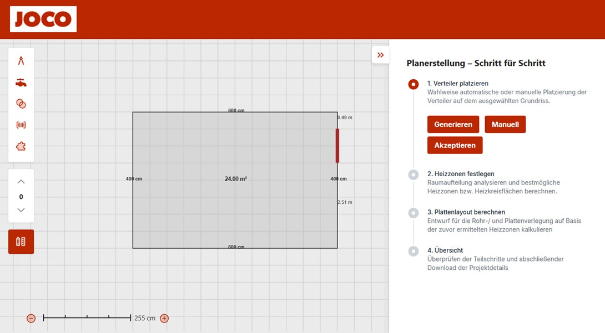

Underfloor Heating Generator
An automated, web-based configurator for designing and optimizing underfloor heating systems, developed in partnership with JOCO GmbH.
Project Overview
In my 4th semester (2025), I served as a Backend Developer on a team of eight students for the Pipe Puzzle Planner project. This was a high-profile academic initiative developed in partnership with JOCO GmbH and completed under the direct supervision of Prof. Alexander von Bodisco, Dean of the Faculty of Informatics. My primary responsibility was to design and implement the system's core geometric abstraction capabilities.
The Vision & The Challenge
Modern construction projects demand a high degree of precision and efficiency.
While digitalization has transformed many industries, the planning of surface heating
and cooling systems often remains a manual, time-consuming, and error-prone process.
Traditional workflows, typically reliant on Excel spreadsheets and CAD programs, are slow,
susceptible to inaccuracies, and heavily dependent on expert knowledge.
This complexity limits scalability and makes it difficult to provide quick, reliable plans for end-customers or smaller contractors.
This project, undertaken in collaboration with JOCO GmbH, was launched to fundamentally modernize this workflow. The goal was to develop
an intelligent, automated solution that digitizes the entire planning process, making it accessible to a wide range of users.
The Solution: An Automated Planning Tool
We created the Pipe Puzzle Planner, a web application that automates the generation of optimized underfloor heating layouts. The system allows users to upload a floor plan in various formats (PDF, JPG, PNG, DWG), after which a powerful backend algorithm performs a detailed analysis.
The application’s core logic mimics an expert planner’s workflow:
- Data Input & Analysis: The system extracts key geometric data from the uploaded floor plan, including room contours, wall dimensions, and the positions of doors and windows.
- Automated Layout Generation: An algorithm calculates the optimal placement for heating circuit distributors and then generates the most efficient and uniform pipe layout for each room.
- Visualization & Interaction: The final layout is rendered on an interactive canvas, where users can inspect the design and export it for implementation.
Deep Dive: My Contribution – Geometric Abstraction
My primary responsibility was developing the backend component for Geometric Abstraction. This was a crucial task focused on translating the raw visual data from a floor plan into a structured format that our algorithms could understand and process. For automated planning to work, the system required a logical understanding of the building’s spatial layout, not just a visual picture.
To solve this, I developed the modules that transform room geometry into an abstract Grid and Graph representation. This became the foundational data structure for the project's subsequent pathfinding and layout algorithms.
My development process included:
- Identifying Room Connectivity: I built the RoomConnector module to automatically analyze room layouts and detect adjacent rooms by identifying shared borders. This process models the connections between rooms, which is the first step in understanding the overall topology of a floor plan.
- Creating a Graph Model: Using the room connections, I implemented the logic to generate a formal, directed graph. In this graph, key locations like doorways and room centers are represented as nodes, and the valid paths between them become edges. This structure is essential for enabling routing algorithms to eventually find the most efficient paths for heating pipes.
- Implementing a Grid for Validation: To help debug and visually verify the abstract graph, I created a feature to output the structure as a 2D ASCII grid. This provided a simple, human-readable view of the system's understanding of the floor plan, allowing our team to rapidly validate the logic.
- Building Test Functions: I created a series of test functions to validate both the grid and the graph structures, ensuring the internal logic was robust and that errors in topology detection could be quickly identified and resolved.
This geometric abstraction component serves as the critical link between the user's floor plan and the automated planning logic. My work in converting complex spatial data into a structured graph was a key enabler for the core automation that defines the Pipe Puzzle Planner.
Technologies Used
- C++
- BoostGeometry
- React
- TypeScript
- PostgreSQL(with PostGIS)
- Docker
- Vite
- Tailwind CSS